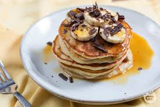

Home
Classic Pancakes

Description
Classic pancakes are soft, fluffy, and perfect for breakfast. Made with simple ingredients like flour, eggs, and
milk, they are best served with butter, syrup, or fresh fruits.
Ingredients
- 1 cup all-purpose flour
- 1 tablespoon sugar
- 1 teaspoon baking powder
- ½ teaspoon baking soda
- ¼ teaspoon salt
- 1 cup milk
- 1 egg
- 2 tablespoons melted butter
- 1 teaspoon vanilla extract
Steps
- In a bowl, mix flour, sugar, baking powder, baking soda, and salt.
- In another bowl, whisk milk, egg, melted butter, and vanilla extract.
- Combine the wet and dry ingredients, stirring until smooth.
- Heat a non-stick pan over medium heat and lightly grease it.
- Pour a ladle of batter and cook until bubbles appear on the surface.
- Flip and cook for another minute until golden brown.
- Repeat with the remaining batter.
- Serve warm with syrup, butter, or fresh fruits.